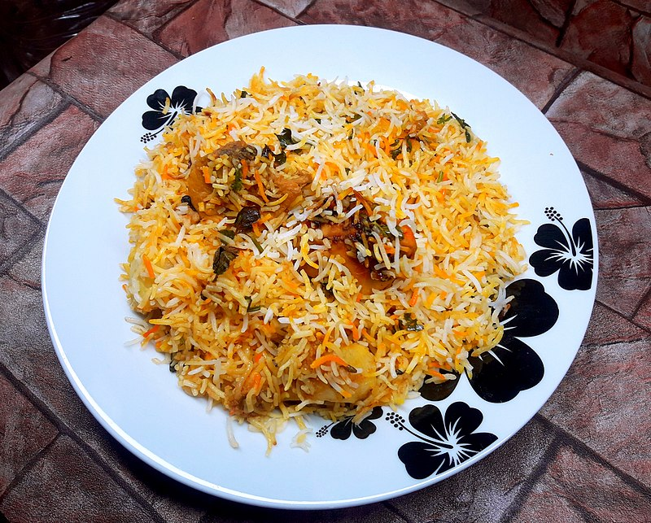

How to make Biryani

Description
Biryani has a strong savoury taste. This is brought about by frying onions
and other Indian spices like garam masala before the rice is added. The
other ingredients, such as meat, are also fried in these spices before
rice and liquid are added.
Ingredients
- 300g basmati rice
- 25G Butter
- 1 large onion
- 1 bay leaf
- small cinnamon stick
- 85 G raisins
Steps
- Soak 300g basmati rice in warm water, then wash in cold until the water runs clear.
- Sprinkle in 1 tsp turmeric, then add 4 chicken breasts, cut into large chunks, and 4 tbsp curry paste. Cook until aromatic.
- Heat 25g butter in a saucepan and cook 1 finely sliced large onion with 1 bay leaf, 3 cardamom pods and 1 small cinnamon stick for 10 mins.
- Stir the rice into the pan with 85g raisins, then pour over 850ml chicken stock.
- Place a tight-fitting lid on the pan and bring to a hard boil, then lower the heat to a minimum and cook the rice for another 5 mins.